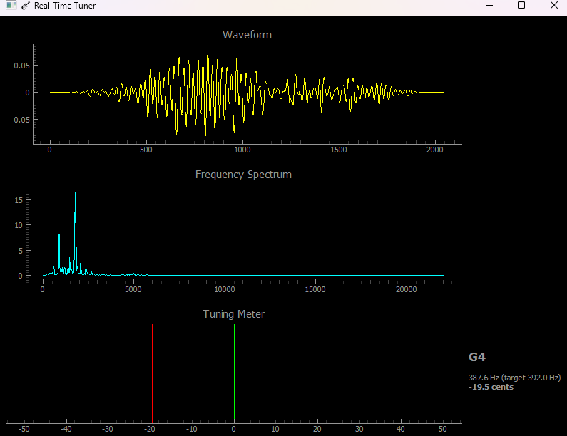

Python Tuner
A Python-based audio tuning application for real-time pitch detection and adjustment.


Code
Used numpy and PyQtGraph libraries for audio processing and visualization.
Performance
Delivers real-time pitch detection with minimal latency and high accuracy.
Challenge
Overcame audio buffer issues by implementing efficient data handling and processing techniques.
import numpy as np
import sounddevice as sd
from scipy.fft import rfft, rfftfreq
from collections import deque
import pyqtgraph as pg
from pyqtgraph.Qt import QtWidgets, QtCore
# Audio settings
fs = 44100
blocksize = 2048
audio_buffer = deque(maxlen=blocksize)
# Note names
NOTE_NAMES = ['C', 'C#', 'D', 'D#', 'E', 'F',
'F#', 'G', 'G#', 'A', 'A#', 'B']
def freq_to_note(freq):
if freq <= 0:
return None, None, None
midi = 69 + 12 * np.log2(freq / 440.0)
midi_rounded = int(round(midi))
note_name = NOTE_NAMES[midi_rounded % 12]
octave = midi_rounded // 12 - 1
exact_freq = 440.0 * (2 ** ((midi_rounded - 69) / 12))
cents = 1200 * np.log2(freq / exact_freq)
return f"{note_name}{octave}", exact_freq, cents
def audio_callback(indata, frames, time, status):
if status:
print(status)
audio_buffer.extend(indata[:, 0])
# Start audio stream
stream = sd.InputStream(callback=audio_callback,
channels=1,
samplerate=fs,
blocksize=blocksize)
stream.start()
# --- PyQtGraph setup ---
app = QtWidgets.QApplication([])
win = pg.GraphicsLayoutWidget(title="🎸 Real-Time Tuner")
win.resize(800, 600)
# Waveform plot
wave_plot = win.addPlot(title="Waveform")
wave_curve = wave_plot.plot(pen='y')
win.nextRow()
# FFT plot
fft_plot = win.addPlot(title="Frequency Spectrum")
fft_curve = fft_plot.plot(pen='c')
fft_plot.setXRange(0, 500)
win.nextRow()
# Tuner meter
meter_plot = win.addPlot(title="Tuning Meter")
meter_plot.setXRange(-50, 50)
meter_plot.setYRange(0, 1)
meter_plot.hideAxis('left')
# Center line
center_line = pg.InfiniteLine(pos=0, angle=90, pen='g')
meter_plot.addItem(center_line)
# Needle
needle = pg.InfiniteLine(pos=0, angle=90, pen='r')
meter_plot.addItem(needle)
# Text display
label = pg.LabelItem(justify='center')
win.addItem(label)
win.show()
# Timer update loop
def update():
if len(audio_buffer) < blocksize:
return
audio = np.array(audio_buffer)
# Window
audio = audio * np.hanning(len(audio))
# FFT
yf = np.abs(rfft(audio))
xf = rfftfreq(len(audio), 1/fs)
# Limit to guitar range
mask = (xf >= 70) & (xf <= 400)
xf_range = xf[mask]
yf_range = yf[mask]
if len(yf_range) == 0:
return
peak = np.argmax(yf_range)
freq = xf_range[peak]
note, exact, cents = freq_to_note(freq)
# Clamp cents for meter
if cents is not None:
cents_clamped = max(-50, min(50, cents))
needle.setValue(cents_clamped)
# Update plots
wave_curve.setData(audio)
fft_curve.setData(xf, yf)
# Update text
if note:
label.setText(
f"{note}
"
f"{freq:.1f} Hz (target {exact:.1f} Hz)
"
f"{cents:+.1f} cents"
)
# Run update loop
timer = QtCore.QTimer()
timer.timeout.connect(update)
timer.start(20) # update every 20 ms (~50 FPS)
app.exec_()